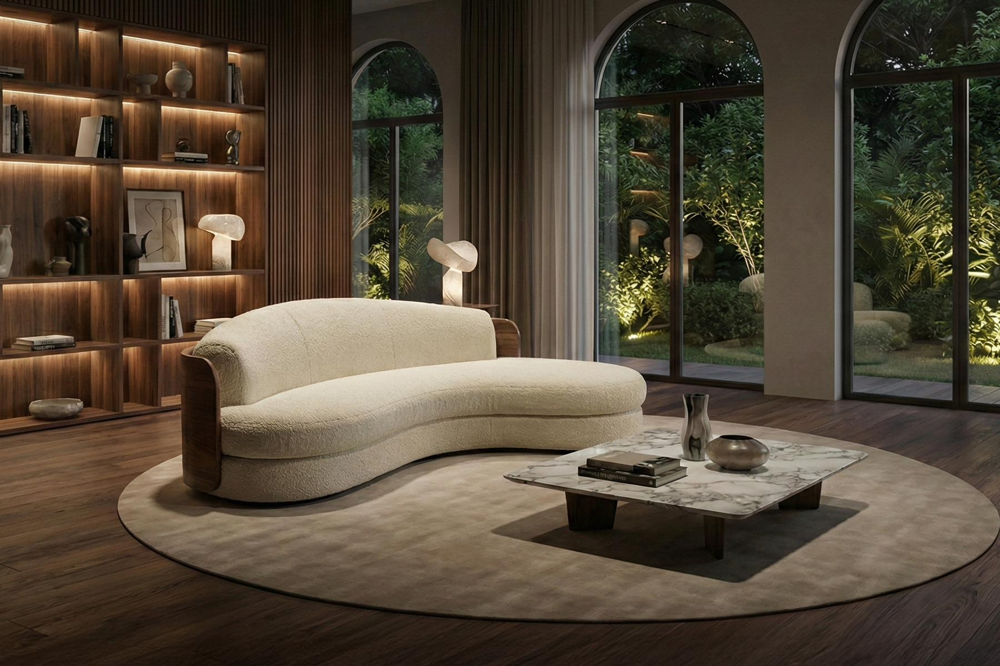
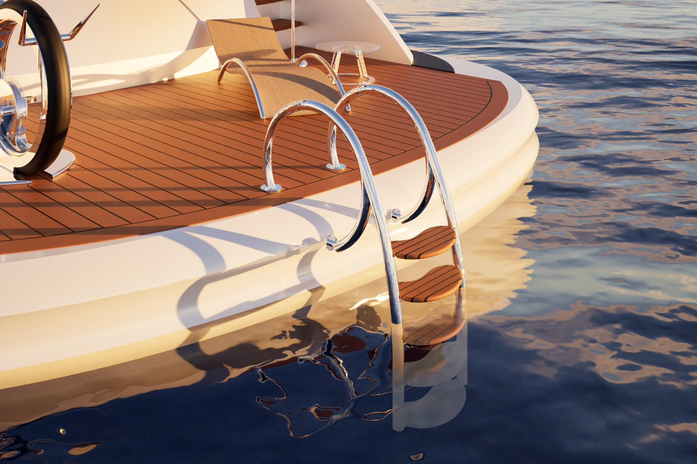
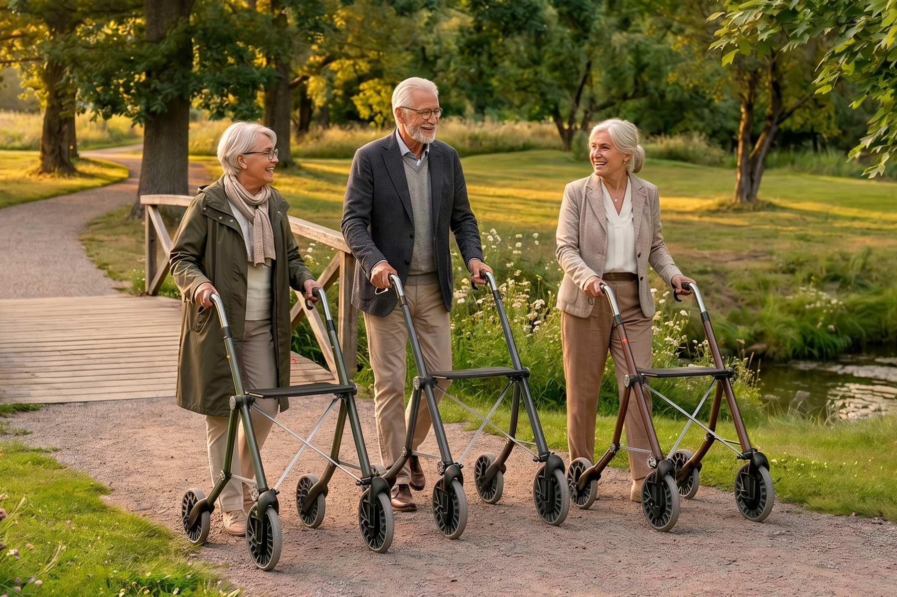
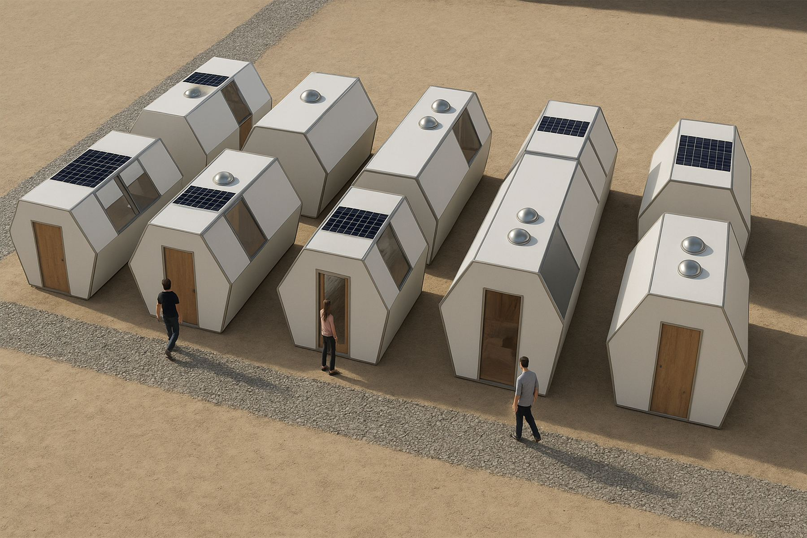
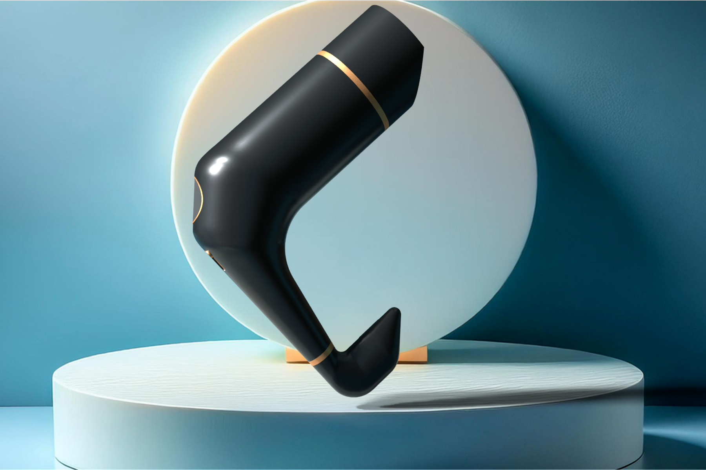

SelenePorada International Design Award 2025

Selene
Un divano dal design organico che bilancia l'estetica del legno massello con la fattibilità tecnica e l'ergonomia, premiato al Porada International Design Award.
Scopri di piùPortfolio
Ciao, sono Giovanni Ferraioli, Industrial Product Designer. Unisco approccio User-Centered, modellazione 3D avanzata e sensibilità estetica per trasformare concept complessi in prodotti fisici funzionali, industrializzabili e pronti per la produzione in serie.

Un divano dal design organico che bilancia l'estetica del legno massello con la fattibilità tecnica e l'ergonomia, premiato al Porada International Design Award.
Scopri di più
Progetto realizzato per il concorso Besenzoni: una scaletta per yacht di lusso che unisce l'eleganza del teak alla resistenza dell'acciaio lucido.
Scopri di più
Glider è un rollator innovativo che de-medicalizza l'ausilio ortopedico, integrando sospensioni a balestra e ruote airless per massimizzare la stabilità e il comfort outdoor.
Scopri di più
Un sistema modulare e reversibile di architettura d'emergenza, ispirato alla natura e basato su un innovativo giunto strutturale estruso in alluminio.
Scopri di più
Un progetto di reverse engineering e riprogettazione ergonomica di un asciugacapelli professionale, validato tramite test utente e prototipazione fisica.
Scopri di più